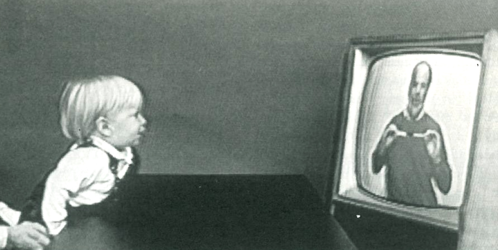
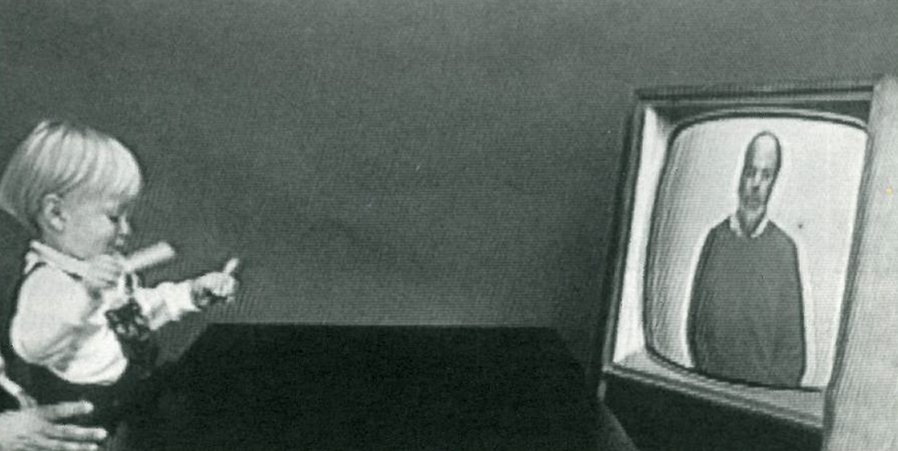
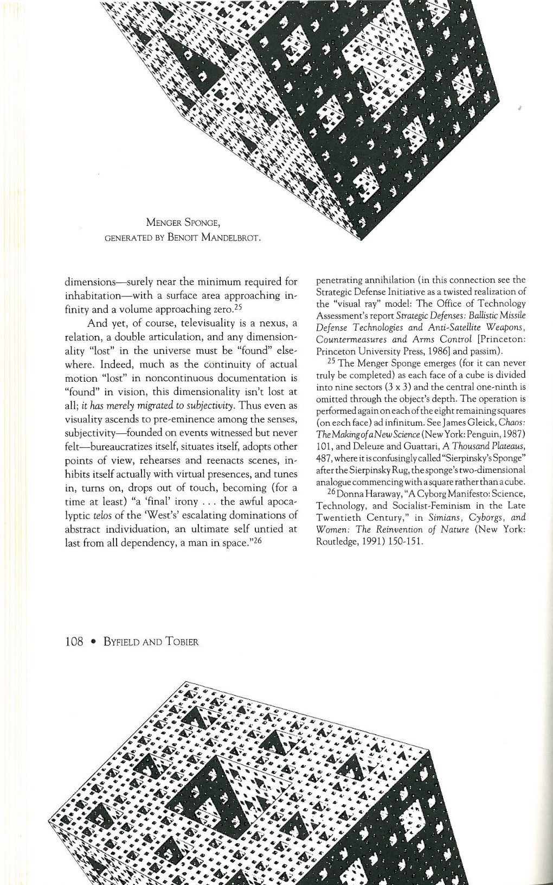

This essay appeared in Stanford Humanities Reviewin the Spring of 1992 (Vol. 2, No. 2–3, pp. 90–108), right when the National Science Foundation (NSF) was amending the internet’s Acceptable Use Policy (AUP) to permit commercial traffic. Although it was ostensibly about television, some of its main themes — telecom infrastructures and their metaphors, the porous relationship between screen and life, political economies of technology, mashup culture as a source of chaos — had much more in common with discussions of “new media” like the internet than “old media” like TV. My artistic collaborator at the time, Lincoln Tobier, wasn’t involved in any aspect of writing it, but our working agreement then was to co-sign our work. The essay was deliberately aggressive in its counter-academic style, structure, and design: lowbrow sources like Time–Life books, ambiguous or even cryptic images, footnotes longer than the text, and so on.
I believe television is going to be the test of the modern world… We shall stand or fall by television — of that I am quite sure… [It] will enormously enlarge the eye’s range… A door closing, heard over the air; a face contorted, seen in a panel of light — these will emerge as the real and the true; and when we bang on the door of our own cell or look into another’s face the impression will be of mere artifice. — E. B. White, in the New Yorker, 1938
![[txt/SHR_images/01-sm.jpeg|A snarling German shepherd, projected from a slide, confronts victims of cynophobia, or fear of dogs, at New York’s New School for Social Research. Patients see a series of slides, progressively showing small, cuddly creatures, then larger dogs, and finally lunging hostile ones — until the phobia sufferers can touch live animals. Photo by Don Hogan Charles for the New York Times (1973), as it appeared in the Nature/Science Annual: 1975 Edition, ed. Jane D. Alexander (New York: Time–Life, 1974).|550]]
Travel Broadens the Mind, or Globaloney
Close your eyes and think for a moment about television.1 Now open them. Try the following exercises: Imagine (a) the Earth, and (b) everyone watching the 750 million televisions scattered across its surface. First: Remove (a). Does what remains look like a latter moment in the Big Bang: a sphere of constellating bodies attracted to radiant objects — constellations, moreover, whose evolving distribution tends, due to a variety of forces, toward accelerating agglomerations?2 Second: Reinstate (a), and imagine the surface slowly rotating. Watch innumerable televisions twinkle on as prime time circles around the globe. Is this an atmospheric front, or a phosphorescent, informational tidal wave washing endlessly over the surface, emerging where rising population density and wealth coincide?
Next, imagine watching a few hours of programming: news, ads, and a portion of an old film. First: Follow the signal back, through your screen, along the path it has taken from its genesis — through flowing ionic hazes, Byzantine circuitry, shifting atmospheres, orbiting satellites, serpentine cables and wiring, spinning videotapes, sleepy archives, dutiful postal systems, panning cameras, and so on — to the multitude of scenes at the moment of their capture. Is this a vastly convoluted electronic tree whose trunk stretches from your screen to distant limbs reaching out through time and space? (But remember: millions of others are watching, too — are they the roots? or a nightmarishly tangled topology of trees?) Second: Imagine, instead, that you are a signal following your fracturing path to multitudes of screens, and think of the outlandish diversity of other such readers-become-signals you collide with and cut off (or get cut off by) as you travel to your multiple destinations: patriotic displays, movie reviewers, reenactments of Jesus’ crucifixion, exciting footage from African game reserves, witty talk-show guests, combat footage from World War II, heartbreaking soap-opera moments, edifying documentaries, radar weather maps, shrieking game-show contestants, somnolent, pandering congressmen, glossing commentators… Now take a step back: is the fantastic path you’ve traced a multiplicity of image-trees edited / grafted together helter-skelter as they stretch toward their destined screens? (Remember: however much editing has been done in the production or broadcast studios, you need only change the channel to graft together disparate branches yourself.)
Is this a tree? Or a universe? A tidal wave? A circulatory system, or a nervous system? A billion points of light, or windows on the world? All of the above? Is it merely a mode of telecommunications? Or is there something else at work here, what Deleuze and Guattari call a rhizome: “a machinic network of finite automata,”3 a map that “always has multiple entryways,” “is open and connectable in all of its dimensions; it is detachable, reversible, susceptible to constant modification”; it “operates by variation, expansion, conquest, capture, offshoots.” Such a structure implies a form of
short-term memory…in no way subject to a law of contiguity or immediacy to its object; it can act at a distance, come or return a long time after, but always under conditions of discontinuity, rupture, and multiplicity. [It] includes forgetting as a process; it merges not with the instant but instead with the nervous, temporal, and collective rhizome.
Above all, this topological network — any point of which “can be connected to anything other, and must be” — the material support for an incredible flux: moving images, roving cameras, changing channels, edited sequences, live broadcasts, teasers, reruns — diverse, repetitive, redundant, serialized, contradictory, complementary programming scattered through time and space. From this hallucinatory and noncontinuous circulation emerge networks in every sense, shifting densities of transmissions that terminate in multitudes of immobile viewers, as though motion itself had migrated out of the body.4
![[txt/SHR_images/02-sm.jpeg|Photo by Ted Polumbaum for Life, as it appeared in Richard C. Atkinson, Introduction to Psychology, Fourth Ed. (New York: Harcourt Brace Jovanovich, 1967).|550]]
The Spontaneous Generation Gap
Aside from the recent concerns that the magnetic fields associated with these transmissions affect even biological machines, criticism of television tends to concern only the apparitions on its screen, its “substance.”5 Television, it is said, has certain effects: an unparalleled capacity to mold young minds, to placate or provoke the politically of age, and to determine the form of our involvement in the world — in short, it has power. Indeed, the most obvious and least mentioned effect of television on social activity is that of supplanting it. If, beyond this, television is seen as “authoritative” (that is, invested with authority) this prerogative stems from the way in which it — more than any other medium and with greater convenience as well — combines continually redoubling efforts to appeal to our perceptual predispositions with the continuing implication of its increasingly “realistic” images into every facet of evolving structures of power.6
![[txt/SHR_images/03-sm.jpeg|Photo by Louise B. Young, as it appeared in the Nature/Science Annual: 1976 Edition, ed. Jane D. Alexander (New York: Time-Life Books, 1975).|250]]
![[txt/SHR_images/04-sm.jpeg|Photo by Ralph Morse for Time–Life, as it appeared in Russel V. Lee, Sarel Eimerl, The Physician (New York: Time, 1967).|250]]
Plato’s Cavedweller (circa 1975), or Tesla’s Best Friend? — Two Views: “This Is Evolution: The Use of New Technics,” Writes Klaus Theweleit in “Circles, Lines, Bits.” “There is no such thing as ‘biological’ evolution. That was already known in 1620 and now (thank Darwin) is long forgotten. The most terrible mistake of the nineteenth century: the abandonment of Creation Theory was based on a biological rather than a technical-artificial foundation.” We leave to the reader the pleasure of deciphering the paradoxes and possibilities (not all of them good).
The complex taxonomy of telecommunications — television (network / cable, UHF / VHF), radio (FM / AM / Ham / shortwave), telephone (private / public, single-line / party-line / network, cable / cellular), telegram / teletype / fax, etc. — is no more dictated by the constituent electronic technologies employed in the total assemblage than are the host of categorical distinctions that surround and suffuse that which is transmitted-network/regulatory agency, program / advertisement, news / entertainment, live / prerecorded, printed press / electronic media, and so on. Rather, corporate capitalism’s emergence as an éminence grise on the one hand (in particular, various conglomerates’ efforts to consolidate control over a developing technology before licensing it out or promoting another), and a certain tendency in governmental regulation on the other (antitrust and antimonopolistic “protection of the public interest” as well as military attempts to dominate developing technologies) have militated in favor of the hegemonizing forms to which we are now accustomed — as opposed to the development of decentralized networks of ur-videophones and interactive information networks (à la France’s “Minitel”), which were not only envisioned in a piecemeal way but practically possible even in the 1920s.7


But for the conflicting ambitions of corporations, the State, and the military, then, television might have redefined dialogue — which the telephone had dispersed and multiplied — by supplementing and integrating the visual with the auditory (cf. AT&T’s slogan “Reach out and touch someone,” a gesture in the dialogue of the blind88). Instead, what came about introduced and enforced a new mode of teletechnology: the possibility of true dialogue was limited to the vocal / auditory, while visuality began to mutate rapidly.9 On the one hand, the image gained a luminous / and mobile immediacy,10 and became increasingly dialogic — at least within limits. On the other hand, it remained prefabricated and its increasingly (though unnecessarily) capital-intensive production became more centralized. Thus, even as television implied more than any prior medium that one could participate in the events transpiring before one’s eyes, it negated one’s capacity for direct intervention; one could only react to this apparent counterworld, and even then only indirectly. Passivity and pleasure converged in the presence, or non-presence, of televisual “communications.” These, in turn, developed into an ever-expanding spiral of bureaucratically mitigated mass pseudo-dialogue, such that now fabricated representations give rise to remarks directed at producers, pollsters, and regulators, who then insinuate their various agendas into the production of ensuing installments. Of course, all of this is predicated on television’s ability, both immediately and deferredly, to please the viewer — an odd composite, a multiplicity, whose existence is concocted in the relation between two states: a passive television–human amalgam and an active consumer.
![[txt/SHR_images/07-sm.jpeg|The “telephonoscope,” depicted by Albert Robida in his 1883 book The Twentieth Century, as it appeared in Henry Margenau and David Bergamini, The Scientist (New York: Time, 1964) This ur-videophone, based upon the already functional telephone, would permit the bourgeois to converse with friends or to watch any current theatrical production. The future is here, but it’s unevenly distributed.|550]]
I Can See My House from Here (My Living Room)
According to television’s own terms, the longer one sits still, the farther one travels; thus it should come as no surprise that specious abstractions and paralyzing conundrums proliferate wildly in the face of such a medium. There is, Walker Percy wrote in the late 1950s,
a phenomenon of moviegoing which I have called certification. Nowadays when a person lives in a neighborhood, the place is not certified for him. More than likely he will live there sadly and the emptiness which is inside him will expand until it evacuates the entire neighborhood.11 But if he sees a movie which shows his very neighborhood, it becomes possible for him to live, for a time at least, as a person who is Somewhere and not Anywhere.12
Percy’s description of this process of pseudo-adequation — notably, his term “certification” — exemplifies how bureaucratism comes to pervade even psychic experience in the face of mass visual media.13 The observer’s minor victory seems to lie in recognizing something: that is, arresting an image from the fluidly anonymous representations that pass before his or her eyes and correlating it with something he or she knows. But the peculiar absence of anyone else in Percy’s experience of a mass medium implies that there is a more salient operation, beyond the gratifications of solitary viewing, at work in certification: a presumption, perhaps a suppressed desire, that others will recognize that same “something” too — that it will thereby, for a time at least, become the nexus of a lost communality.
![[txt/SHR_images/08-sm.jpeg|Video Stills from Volker Schlondorff’s The Tin Drum.|250]]
Lost communality notwithstanding, Percy — and in this he’s not alone — explicitly relates the acute sense of inadequacy to disruptive “moviegoing,” or, in more general terms, to the episodes of mass visuality that punctuate his life. But is this lost immanence purely attributable to some conditions inherent in film or television viewing, or in their constituent elements? Or is there a more exquisite, more subtle calculus at play, a hyperadequation somewhere in the works, which balances the inadequacy that seems to pervade reception? Eric and Marshall McLuhan assert (in Laws of Media) that
The ground of any technology or artefact is both the situation that gives rise to it and the whole environment (medium) of services and disservices that it brings into play. These environmental side-effects impose themselves willy-nilly as a new form of culture.14
If a representation, a complex cathexis of visual stimuli and observer, is “inadequate,” it is so only on an implied scale of verisimilitude which, much like Zeno’s arrow, can never quite get there, never quite “be real.” After all, commentators of every stripe speak of a general loss of coherence, integrity, and/or immanence such that even “the real” has come to seem unreal. And while television, clearly, is not the sufficient cause of this pervasive alienation, just as clearly it does contribute to it: television is a mode of this alienation, a segment in it, a relation of it. And while the television screen is often noted as a site on which such abstractions as time, space, scale, scope, causality, continuity, and integrity, are disrupted, distended, compressed, fragmented, repeated, and omitted,15 these effects — in which we are “literate,” or as McLuhan puts it, “postliterate” — extend far beyond the screen.
Free Radicals, L’Esclaves Modernes
To “capture” an event or entity on film is to wrest it from the immediate flux of which it is an integral part: that is, to disorganize and disintegrate its sense. Once isolated, its valence, its possible meanings and aspects, proliferate with each re-presentation. A suitable whipping boy is the politician in the age of television: his or her “accountability” grows to encompass, at one pole, increasingly casual and private words and deeds, and at the other, an audience expanding in space (beyond the immediate scene or region, to the nation) and in time (beyond the imme diate audience, to a posterity telescop ing into the present). This proliferation of possible event-observer combinations is most often described in terms of the “dissemination” of images into viewing spaces, thereby prioritizing the terminal screen and spurring on the already Galluping rationalization of reception. But it is perhaps more fruitful to think of this proliferation as the “insemination” of a virtual audience into the matrix of an already fecund actual scene as a force shaping the way in which the scene unfolds. This implication of virtual observers into the production of reality in the here and now — into one’s words, deeds, interactions — is felt as a certain pressure, an inhibition.16 This hyperadequation — a constituent action — in expression, then, might account for its obverse, the inadequacy — a passive condition — of reception.
I Seemly To Be an Adverb
That television isn’t the cause of this proliferation is immaterial, because, as a dominant mode of “communication,” television more or less determines the phenomenon’s form. For example, we experience as coherent and continuous certain disruptions and distortions of time, space, view point, and so on, which are impossible without such a mitigating medium. What first might seem impossible becomes possible and, given time, actual. Thus one hears in everyday speech the very techniques that distinguish “film” from “reality” used to describe the movement of thought, the experience of subjectivity itself.17
The debate over television’s ability to influence viewers, as though through some mimetic imperative, misses the point. Clearly such influence is implicated in, among other things, the reification of stereotypes, both those with which one identifies and those one applies to others. A more interesting question (upon which such specifics are so much flotsam and jetsam) is just how fundamentally television determines our experience: for example, is the television a — or the — dominant but unacknowledged epistemological model of subjectivity? Do we understand ourselves as presentational constructions, moved by prefabricated, precoded information, precipitated-in a strangely evacuated but somehow “electric” space-according to certain definable procedures? Do we then represent or exhibit representations of these coded signals to others, who react in turn with greater or lesser pleasure? Do we feel that our performances are often generic or “predictable,” that their singularity pales before the larger socioeconomic forces that determine them?
Clearly, these questions are phrased so as to prevent their being rejected wholly out of hand. The speculation they might give rise to, though, is far more fruitful than a simple yes or no, a digital answer. And given even the possibility of an affirmative answer, it’s only fitting that television should become the locus modernus of our lost immanence, in E. B. White’s words, “the test of the modern world.”
But must we take this test? Or if we need not, why are we taking it? In other words: why do we watch television?
We Got Nothing Better to Do (Except Sit Around and Have a Couple of Brews)
Physiologically, television is the attention-grabber par excellence. Its screen is both fire and antagonist, whether prey or predator. On the one hand, its carefully engineered luminosity relative to its surroundings necessarily attracts one’s gaze: variegated light, after all, is both the medium and the message of vision itself. On the other hand, the motion it exhibits necessarily transfixes one’s gaze: tracking a mobile figure on a static field is a primary visual reflex. A television screen is, moreover, a figure within a ground, and a figure within which — or upon which, as you will — figures proliferate. Or so it seems.
Television — and the discussion above is no exception — is invariably equated with the luminous screen. This reduction, like a verbal tic, is a corollary of the television-as-window topos, the persistent attempt to squeeze television into the Procrustean bed of mimesis, which it clearly supersedes by dint of its capacity to exhibit time.18A television, though, is itself a three-dimensional reality; behind the transfixing screen lies a machine capable of little more than decoding precoded signals. The television’s opaque cabinet obscures the means of reproduction of a prefabricated image, which itself — under the mystifying term “information,” as though it were a bunch of digital worms spontaneously generated from a meaty world — obscures its owns means of production. And as a consequence of both this doubly obscured means of production, and the “window” topos, television’s true aspect emerges.
Merely plug a television into a socket-the ubiquitous source of energy abstracted from its originary motion19 — and it gathers imperceptible, ethereal signals; hook it up to an antenna or a cable and it gathers still more — all very mysterious, all very alienated and mystified. Its image flux is anomalous, interchangeable, spontaneously generated, self-propagating, self-perpetuating. And while this emanative quality seems to be a function of the image itself, in fact it derives from the reproduction of the image — or, more specifically, from the space of this reproduction. A “open” or “folded” architecture (movie theater, projection-screen television) permits or even requires the viewer to inhabit the extensive space in which the image is reproduced, a space between two elements (projector and screen). Because the viewer watches a reflection, his or her line of sight more or less coincides with the axis of projection (which itself is often visible in the dark). The “closed” architecture of the television, on the other hand, permits no such freedom, no such tacit exposure of the means of reproduction; rather, as its size decreases, its manipulability, its objectivity, correspondingly increases, as does its ever-more miniaturized mystique. It is, in a word, phantasmagoric.20
![[txt/SHR_images/09-sm.jpeg|So that’s how it works. Photo by Andreas Feininger, as it appeared in Life (March, 1992).|550]]
L’Esclave Moderne, or the One-Dimensional Tourist
Or at least it is apparently so — to a viewer, obviously — for a phantasmagoria is, above all, a relation. This relation consists, on the one hand, of a subject who relinquishes his or her awareness of the labor so clearly evident in the image flux, and thereby acquiesces to the equation of his or her subjectivity with visuality; and, on the other, a multiplicity of stationary, mobile, and disjointed viewpoints that converge into a single firmly rooted and yet disembodied viewpoint that seems to pivot, spin, hover, fly, and teleport itself quite without effort-and that seems through this effortlessness to negate what in bygone days were known as the laws of physics.21 That viewer and surface render each other as such is clearest in a popculture epiphany in which the viewer-surface becomes subject-space: a man (invariably), enraged at what he sees on television, smashes it, only to reveal — à la the uncertainty principle, very much a creature of the television age — that he can see the image or know where it comes from, but not both.
Of course, there is an entire industry devoted to the production of images suitably obfuscated for such a relation, just as there is an entire population devoted to acquiescing to such obfuscated images. We can designate as “the middle” that elided space which lies between the photoactive surface of innumerable cameras and the phosphorescent surface of innumerable television screens — a material, experiential, and above all Newtonian space of counterweights and countermovements, in which inheres, if not what we know, then at least what we act on — and say that televisuality is a double articulation that grows from the middle. Cameras proliferate as televisions do, not in a relation of supply and demand, nor of cause and effect, but rather in a rhizomatic circulation. And although this circulation is a concurrence involving populations, it is less a social contract, inhering in a sociojuridical space that “sovereign” individuals can experience, than it is a medial contract, inhering in a space–time discontinuum of human machine — an adimensional, paraphysical cyberspace of noncontinuous, irregular, reversible, repeatable time.
This systemic functioning is, in a phrase, a rudimentary “virtual reality” — that is, quite real but not actual. As such, it can be experienced only as a virtual image. And however mobile qua actor or qua audience this image may be, it nevertheless invests events, in all their fractality, integrity, continuity, dimensionality, and temporality, with a face. Thus, the politician, anticipating that millions will watch, censors himor herself in his or her present for the virtual multitudes apparent in a camera lens; and the viewers, knowing that he or she will have done so, assess in their present the virtual image of this past performance apparent on a television screen — all in all, a reciprocal certification of sorts.22 Alternatively, the unforeseen-not documented in proportion to the significance retrospectively invested in it — acquires only minimal facets: the Zapruder film of Kennedy’s assassination, the explosion of the space shuttle Challenger, and so on.23 Televisuality — the whole technology and all it encompasses — merely supersedes, collapses, subverts, and negates “substantive” oppositions such as cause / effect,24 time / space, mind / body, event / observer, and so on, not by exploring them in depth but by denying them their spatiotemporal fullness and ambiguity. The result is a faceted husk of a universe from which space and force are repeatedly, regressively elided: a Menger Sponge, if you will, a topological object occupying 2.768 dimensions surely near the minimum required for inhabitation — with a surface area approaching infinity and a volume approaching zero.25
And yet, of course, televisuality is a nexus, a relation, a double articulation, and any dimensionality “lost” in the universe must be “found” elsewhere. Indeed, much as the continuity of actual motion “lost” in noncontinuous documentation is “found” in vision, this dimensionality isn’t lost at all; it has merely migrated to subjectivity. Thus even as visuality ascends to pre-eminence among the senses, subjectivity — founded on events witnessed but never felt-bureaucratizes itself, situates itself, adopts other points of view, rehearses and reenacts scenes, inhibits itself actually with virtual presences, and tunes in, turns on, drops out of touch, becoming (for a time at least) “a ‘final’ irony…the awful apocalyptic telos of the ‘West’s’ escalating dominations of abstract individuation, an ultimate self untied at last from all dependency, a man in space.”26

Notes
Footnotes
-
This essay is excerpted from “Gloss,” a work in progress otherwise devoted to more or less concrete moments in the psychosocial transformations effected by glass. Portions of it have appeared or will appear in Bijdrage AAAA, Een Nummer, ed. Annink and Paul Lammertink (The Hague, March 1991) and Zone 6: Incorporations, ed. Sanford Kwinter and Jonathan Crary (New York: Zone Books, forthcoming 1992); thanks are due to certain editors concerned. As regards this excerpt, thanks to Kristen Vallow and Michael Gotkin, who encouraged us to write on a subject that Ted Byfield abhors, to Beth McGroarty for her taste, intelligence, and good manners, and to Robert Dulgarian as well. [2024-Oct-07: The Zone publication didn’t happen.] ↩
-
Televisuality, as Deleuze and Guattari say, quoting Kafka, “grows from the middle”: cameras and televisions, the opposite “ends” or periphery of image circulating networks, spawn each other, and much as the documentation of mundane fabrications expands, so too does the documentation of celestial “preexistents”: soap operas at one pole and heavenly bodies at the other. Like television, the Big Bang was formulated as a theory soon after World WarI (in the formof Abbé Lemaître’s atom primitif) and promulgated (by George Gamow, among others) after World War Il; the success of this promulgation owed much to televisual technologies, for the Big Bang’s circular — or perhaps more accurately spherical, even global —logic, like televisuality, inverts material experience. Given the understanding of relativity that it vigilantly safeguards, even coenasthetically felt motion is as much an illusion of one’s frame of reference as is sight: to look out in space is to look back in time, in order to find its singular center in millions of points at its periphery. [2024-Oct-07: the strange spelling was SHR’s style, not a typo!] The cosmos becomes its own spectacle: an expanding network of objects broadcasting decodable signals, of processes to be studied in accelerated and decelerated time, of replays and simulations, of time-reversible physical processes, predictable programming, late-breaking novas and sudden disruptions of television viewing by solar flares… a road that begins at a singular point in space-time and expands in every direction. Using the figure par excellence for progressivist history, Paul Virilio remarks: “When you drive down a highway…you don’t realize how extraordinary an invention this unwinding strip is… Everything [one says about it] can also be said about the ‘unwinding’ of the videotape.” “The Third Window,” in Wedge, N° 9/10, ed. Cynthia Schneider and Brian Wallis, reprinted as Global Television (Cambridge, MA: MIT Press, 1988) 355. ↩
-
Gilles Deleuze and Felix Guattari, A Thousand Plateaus (Minneapolis: University of Minnesota Press, 1987) 18; the quotations that follow are from 13, 12, 21, 16 and 6 respectively. Alternatively, is the “rhizome” merely the abstract movement possible only in — or in light of — the queerly aspatial, immaterial aspect the universe takes on with telecommunications? In other words, is “rhizome” just another word for nothing left to lose? ↩
-
For a discussion of this type of effect see Manuel De Landa, War in the Age of Intelligent Machines (New York: Swerve Editions, 1992). ↩
-
Arguments involving the supposed “unreality” of televisual representations transpose misgivings precipitating from another order — that of consumerism-onto the luminous image itself. Clearly a viewer should neither expect a television to “transport” him or her into the events and scenes depicted, nor employ its failure to do so in a critique or assessment of a television’s “reality.” However regressive television viewing might be, it is obviously nonetheless real. (By contrast, few would question the reality of a written description in this manner, even though reading is a far more abstract and arduous pursuit than watching television; the “motion” from one letter, word, line, page, to the next is impelled/produced by the reader’s desire for “completion,” and involves no visual reflex as television does.) [¶] Concerning a recent infant-cognition experiment demonstrating that ten-month-olds S will imitate a television image of an adult performing (and explaining) a simple puzzle, The New York Times commented: Dr Andrew Meltzoffs study “refutes an influential theory of perception, which held that one needs to acquire the understanding that a two-dimensional image… represents three-dimensional reality. [This ability] may be innate” (“Studies Reveal TV’s Potential To Teach Infants,” Nov. 22, 1988, C1)-as though the compulsion t categorically to reduce experience in all its fractal splendor to “two-dimensional image” S or “three-dimensional reality” were innate. For our purposes (as distinct from those of Dr. Meltzoff), the study seems to imply that an infant’s understanding of the figural, synchronized images and sounds exhibited by a television as qualitatively real is not merely innate but entirely justified insofar as the infant can verify such an intuition when the toy it holds functions like the one it has seen someone holding on television. (Thanks to Dr. Meltzoff for providing the images that accompanied his “Imitation of Televised Models by Infants,” Child Development 59, [1988], 1221–1229.) ↩
-
Even as Western visual history has been subjected to vigorous inquiry, the traditional and wholly specious understanding of that history— as an “ever-increasing progress toward verisimilitude in representation, in which Renaissance perspective and photography are part of the same quest for a fully objective equivalent of ‘natural vision,” to use Jonathan Crary’s phrasing-has come to represent a popular foundation myth for the rising consumero-militaristic obsession with the technologies employed in remote surveillance (the quotation is taken from Jonathan Crary, Techniques of the Observer: On Vision and Modernity in the Nineteenth Century [Cambridge, MA: MIT Press, 1990] 26). In the early 1950s, for example, television technology was considered as a means by which reconnaissance satellites could capture and transmit images for analysis “but was rejected because the desired resolution [of 180+ lines per millimeter] was not attainable with available technology.” (See Ted Greenwood, “Reconnaissance and Arms Control,” in Herbert York, ed., Arms Control, 225 and passim.) The Pentagon’s recent zealous promotion and financing of (and proprietary interest in), for example, high-definition television (HDTV) indicates that military interest in television was not obviated when the definition problem was solved by other means. Rather, this is a continuing interest and it can be traced back to the U.S. Navy’s efforts after World War I to maintain the monopoly on radio that it had been granted during the war. (See Douglas Kellner, Television and the Crisis of Democracy [Boulder, CO: Westview Press, 1990] 25–26 and passim). [¶] In the context of a medium as essentially fluid as television, it is perhaps better to set aside notions of technical advance and instead focus on the perpetual narrative stasis, the suspended animation of history as news, for example, that television maintains. Thus, when early in 1991 the authorities of the French-held island of Réunion shut down a ship-based television station that was broadcasting “nothing but pornographic and karate films,” the island’s government was deposed by the citizens of Réunion until the French intervened “diplomatically,” as well as unconventionally. ↩
-
For an overview see Douglas Kellner, Television and the Crisis of Democracy, Ch. 2. ↩
-
And perhaps bitterly blind, in light of their attempts to monopolize television broadcasting over telephone lines, attempts foiled in the late 1930s (Kellner 37–38). Tactile language — “keep in touch,” “I can be reached at” — is oddly endemic to auditory telecommunications, perhaps as an overcompensating inversion. The loss of tactility implicit in the rising primacy of the remote senses-sight and hearing-is clear from the following passage: “If my fingers pressed the roundness of an apple, each one with a different weight, very soon I could not tell whether I was touching it or it was touching me… My hands…put me in a world where everything was an exchange of pressures… I spent hours leaning against objects and letting them lean against me. Any blind person can tell you this gesture, this exchange, gives him a satisfaction too deep for words… [It] means an end of living in front of things and a beginning of living with them… I could not touch a pear tree in the garden just by following the trunk with my fingers, then the branches, then the leaves… For in the air, between the leaves, the pear tree continued, and I had to move my hands from branch to branch” (And Then There Was Light, trans. Elizabeth R. Cameron [Boston: Little, Brown, 1963] 27-28, emphasis added; quoted in Eric and Marshall McLuhan, Laws of Media [Toronto: University of Toronto Press, 1988]). ↩
-
That discussions of television are dominated by visuality demonstrates that its auditory aspect is seen, as it were, through the lens of its visual aspect. Not that television has “corrupted” some prior, ideal economy of communication; rather, it magnifies certain aspects of communication, diminishes others, and — like every other form of communication — its effects increasingly pervade experience itself. For example, gestures and facial expressions (essential to immediate dialogue) are lost in telephone conversations, but vocal inflections (essential on the telephone) are lost in letters. Thus “progress” in technology is no more linear than the effects of each “advance” are cumulative: messages are left on answering machines as verbal calling cards, novels are adapted for films and films are novelized, tape recordings and snapshots subjectify memory, television news is audiovisual rumor… ↩
-
In “The Work of Art in the Age of Mechanical Reproduction,” Walter Benjamin remarks: “Lithography enabled graphic art to illustrate everyday life, and it began to keep pace with printing. But only a few decades [later it] was surpassed by photography. For the first time in the process of pictorial reproduction, photography freed the hand of the most important functions, which henceforth devolved only upon the eye looking into a lens. Since the eye perceives more quickly than the hand can draw, the process of pictorial reproduction was accelerated so enormously that it could keep pace with speech.” (Illuminations [New York: Schocken Books, 1969] 219). Benjamin speaks of reproduction as a cycle passing through the human body and consequently subject to differentials of speed, none of which is absolute. Simple cycles, whether classically linguistic (ear→mouth) or gestural (eye→hand), operate at different rates, as do the constituent organs within each cycle; but these differentials appear — literally only when the two cycles converge and complicate each other through the mediation of reproductive technologies. (In the most general historical terms, the visual is inscribed; the oral/aural is then subjected to an abstract “mimesis” that is later mechanized; the visual is in turn subjected to mechanization, and so on.) These technologies, these material expressions, give rise in turn to a number of other differentials of speed: reading / hearing / viewing, writing / speaking / depicting, and all their permutations, which further complicate the cycles they involve. Such complications — for example, pictorial production “falling behind” the mechanized production of the written until the advent of lithography and photography — produce an interminable tumble in which the fastest element provides a tentative “absolute” of any given differential; in effect, the entire system accelerates. But as the speeds of various reproductive technologies synchronize, and as the differentials between life’s productions and synchronized reproductions shrink, the fundamental effective criterion for distinguishing reproductions, namely their delay and/or immobility, simply vanishes. Production and reproduction, impression and expression become simultaneous, a single effluvial cycle in the face of which the walls of interiority are bound to crumble. ↩
-
This evacuation isn’t entirely metaphorical: from the advent of the Industrial Revolution, public gathering places such as commons, assembly rooms, social clubs, pubs, and cafés, which were formerly the locus of debate and social activity, began to empty, if not of people then of communality, and in terms of the latter they have met their demise in the postwar years. ↩
-
Walker Percy, The Moviegoer (New York: Ivy, 1960) 53. ↩
-
Percy is of course describing movies, which are in many respects fundamentally different (although not entirely dissimilar) from television. In this context we would simply suggest that the two differ not so much in kind as in degree, and that television represents an intensification of the effects that Percy describes. ↩
-
Eric and Marshall McLuhan, The Laws of Media, 5. ↩
-
Paul Virilio (in “The Third Window”) has recently argued for a historiography based on three “window-ages.” The first is the door-window, the aperture that permits the passage of bodies; it defines the architectural habitat and thereby reifies the diurnal / nocturnal distinction. The second, the glass window, frees light from its atmospheric medium, thereby abstracting light, and with it vision. This window no longer permits the passage of material bodies; it evolved, according to Virilio, from the clostrum to a more mobile, total “window-screen, which then became part of the vehicle.” The third window is the TV / monitor / VCR ensemble, an “architectonic” window that “creates an image of the topology of the world” by presenting images, mimetic and/ or abstract, in a plurality of times (“real,” deferred, replayed, slow motion, etc.) and spaces (in any scale, from any viewpoint). But to categorize the television screen as a window — however one qualifies it — merely elaborates the common-enough belief that a viewer, by looking “into” a box, is somehow looking “out there,” speciously implying the possibility of participating in “out there” (voilà!) from the comfort of one’s own home. This obvious contradiction between intro- and extrospection falls neatly along Horatian lines, which correspond in turn to the public / private distinctions that now seem to be failing us. Woe betide the viewer stupefied by staring passively into naught but entertainment, often domestically oriented sitcoms; but blessed is the “informationaut” who “widens his or her horizons” by contemplating the world through the medium of pedagogical programming, the mythic forbear of “information space.” ↩
-
(We feel obliged to note that the following discussion was formulated before PC-bashing became the hobby of choice for neocons. We would also add that the phrase “politically correct” is employed here in the sense we first encountered, that is, as coined by progressive liberals to denote an ideal, as distinct from the caricature it has become-although the transformation the phrase has undergone presents an object lesson that linguistidigitative reformers would do well to consider.) [¶] Although the operation of this inhibition does derive from “surveillance” à la Foucault, we would argue that Foucault’s own ability to discern such a structure is a sign of the structure’s redoubling into a qualitatively different, “global” form of selfpolicing (his very avoidance of theory-derived program-mongering argues for his awareness of just such an implication). What formerly applied in the here-and-now to the actual increasingly comes, in an economy of spatiotemporally discontinuous images, to apply to everything allied to the virtual: language, thought, identity. The consequent inhibitory effect is evident in the two Esperantos consciously produced for “mass” consumption — that is, for the pleasure of the hearer — the centrifugal divergences of which mirror each other: “politically correct” rhetoric and corporate rhetoric. (We welcome readers’ assessments of “theory” as a third variant.) Both rhetorics exhibit an obsessional (and accelerating) concern to efface (that is, to obscure) explicit power relations, if not from thought then at least from specific locutions. Both also claim that this concern expresses their respective supporters’ “emerging global consciousness” and as such is central to redefining communality (hence rampant factionalism) so as to effect widespread change — the puported goals being, on the one hand, an “empowering” global coalition of the disenfranchised, and on the other, an anti- or a-national corporate state or “global shopping center.” It may well turn out that these two results are one. [¶] The clarity of corporate language is inversely proportional to the horrors engendered by corporate politics: life is dirty, the headquarters clean, and corporatese sanitizes the actions (verbs) that it employs. Thus, for example, the trusty “disgruntled-employee” scapegoat, who was formerly “p*ssed off” at being “fired,” is now “negatively impacted upon” as a result of having been “outplaced.” Both corporate locutions are exemplary in their signal non-acknowledgement of the volition of the (generalized) person affected. [¶] Politically correct rhetoric, on the other hand, in which purported diversity pales before regimenting signs, avoids “exclusive” or “offensive” locutions (especially nominal categories) because they are predicated upon, and perpetuate, “obsolete” evaluations. An extreme example is the sequence crippled/handicapped/disabled/differently abled: different from what? one might ask. From a thoughtful perspective, the answer might be “different” as in singular; unfortunately, from a more common, “normal” perspective (in which the qualitative and quantitative coalesce for better or for worse), the answer would be “different” from the norm. (For heuristic purposes we omit the more recent “physically challenged” and would inadequately advance one of our own invention: paratalented — which doesn’t perpetuate the dominant sign of inadequacy.) [¶] One can’t deny that putatively obsolescent terms have served as modes of oppressive norms that most (ourselves included) would like to see pass away; nor can one deny that renaming has in some instances been an effective tactic in exposing and opposing power relations. But, pragmatically speaking, installing nominal change as a habitual “solution” will not only perpetuate out reify in an accelerated philology the very categories—the abhorrent effects of which in no way rely on explicitness — that, ostensibly “deconstructed,” are time and again reconstructed. This “Progressive” sanitizing of language, such that it categorizes but ceases to describe, makes the categorization — which is only one sine qua non of power relations — all the harder to recognize and oppose. To throw off an oppressively objectified status as the “falsely so-called” is one thing, to re-embrace it under a nicer name as a “properly self-styled” subjectification another; but to conflate the two acts, predicated as they are upon different agencies, can only intensify oppression by reinstalling it as the foundation and mechanism of identity. Though this tendency is touted as (again) “empowerment” through the “reappropriation of language” (as though power weren’t the problem), its obverse is more telling: the neglect or rejection of such neologisms is deemed an acceptance of, or adherence to, one’s “culturally determined” (i.e. demographic) status-that is, to the very categories applied to far greater effect by analytical bureaucracies that profit from surveillance. (And one can rest assured that these bureaucracies aren’t adopting techniques originated by the “politically correct.”) A political discourse predicated on formal categories may claim to politicize consumers, but it will only further consumerize politics, or the doddering ghost of credulous nominalism that passes under that name. (Put simply: Appropriation is itself appropriable.) [¶] For a discussion of the cultural and pedagogical reforms envisioned (in 1972) by global corporations as a means of subverting profit-impeding national consciousness — and now promulgated in distorted groupuscular form by “left-wing” reformers — see Richard J. Barnett and Ronald E. Müller, Global Reach (New York: Touchstone, 1974), Ch. 5, esp. 113ff. ↩
-
To wit, “adopting other points of view,” “endlessly rehearsing a scene,” or “reviewing it” in search of clues to its meaning, feeling impatience at the “slow pace” and “continual irresolution” of life, and a host of other terms: “winding things up,” “foregrounding” an issue, giving “background,” “framing” something (or someone), a “setup,” etc., etc. Noteworthy in this context is the terminology used by the first generation weaned on television to describe its embrace of “reality” (“tune in, turn on, drop out”) and the sudden but unexpected resurgence of this reality (a “flashback”). ↩
-
As is well known, a filmic record reduces motion (by definition continuous and indivisible) to a noncontinuous sequence of still images that in turn are reconstituted as apparent motion. In other words, the criterion of credibility for represented motion is established by the human eye. An apparatus that fails to meet this criterion — to capture and exhibit sequential frames in sufficient temporal proximity — cannot credibly represent motion; its product is seen as an evident illusion and met with glee or dismay, depending on the level of expected (or accustomed) verisimilitude. But for an apparatus that does meet this criterion (and does so by design, of course), the distinction between the discontinuity objectively presented to the eye and the continuity that the eye perceives is irrelevant. The segments that are objectively “lost,” these now-interstitial omissions, are not perceived because they don’t exist, and never did: they’re absences. And those aspects of vision that permit us to perceive noncontinuous motion as continuous are not flaws or quirks of subjective vision; they are vision itself. Much ink is spilled elaborating what allegedly distinguishes cinematic or televisual representations from reality, but it is never mentioned that one’s eyes interrogate the screen-restlessly tracking, focusing, shifting-as much as they would any other scene of like size and activity. One can talk until blue in the face about the qualitative differences between the cinematic eye and the human eye, or about the effects of the cinematic paradigm on vision, but — it’s dull but true — the flux of images that appears on a screen is, ultimately, in practice subject to the standard of our concrete vision. ↩
-
Energy is, of course, itself an abstraction of motion, and its origin is always motion; if not a linear motion, then at least a movement perpendicular to the mechanism, usually circular (whether waterwheel, windmill, treadmill, turbine), that captures and transforms it. The history of the abstraction of motion, of its transformation, accumulation, release, and regulation, is a fruitful index of the abstraction of thought, especially insofar as the two seem to have converged in molecular form in electronic data coded energy that is both the medium and the message. ↩
-
In describing how optical devices of the 1830s and 1840s – stereoscopes and phenakistiscopes, for example – became outmoded, Jonathan Crary remarks that “they were insufficiently ‘phantasmagoric,” that is, their operations were more or less visible, unlike the “magic lantern performances of the 1790s and early 1800s [which] used back projections” to obscure the source of the image’s luminosity (Techniques of the Observer, 132). Of the open-ended stereoscope and the kaleidoscope (which David Brewster invented), Crary writes: “The effacement or mystification of a machine’s operation was precisely what David Brewster hoped to overcome [with them]. He optimistically saw the spread of scientific ideas in the nineteenth century undermining the possibility of phantasmagoric effects [that is, in Adorno’s words, ‘the occultation of production by means of the outward appearance of the product’], and he overlapped the history of civilization with the development of technologies of illusion and apparition. For Brewster, a Scottish Calvinist, the maintenance of barbarism, tyranny, and popery had always been founded on closely guarded knowledge of optics and acoustics… But his implied program, the democratization and mass dissemination of techniques of illusion, simply collapsed the older model of power onto a single human subject, transforming each observer into simultaneously the magician and the deceived” (133). ↩
-
Sensations of momentum and motion, which, for example, a cameraperson on a crane or armature will feel but a television viewer will not, are nonetheless not wholly lost through the translation of physical movement into a mobile viewpoint. For example, novelty 70mm film screens that occupy one’s visual field even to the periphery produce unsettling, visceral sensations of motion. ↩
-
And never the twain shall meet: the virtual presence of each multiplicity becomes in effect an agency affecting the actions (or inactions) of both, but the material ground of their convergence is the whole of the technology that brings about this global effect. Thus there is no “here” or “now” to speak of in such a relation. ↩
-
The exploding Challenger was among other things a volatile, arabesque monument to dimensionality. Although hundreds present documented it, their footage was confiscated. As of this writing NASA has refused to release this footage, thereby investing the event with a single facet. As for the Zapruder film, one can only wonder whether the alleged second gunman was anything more than an illusory inversion of the singular cameraman lurking “behind” the assassination “front” as defined by Zapruder. ↩
-
“Television violence causes violence,” much as “pornography causes rape.” Distinctions between sufficient and proximate causes are admittedly arcane. Nonetheless, insofar as mass visuality is implicated in the rapid transformation of traditional social structures and can be seen to have interpolated representations and/or simulations in and among the real McCoy, there is indeed merit to such contentions. But the transformation of one lamentable social relation into another even more lamentable invariably involves some representational and/ or reproductive technology that grounds the latter. These technologies are not just so many tabula rasa; on the contrary, their very application tends to reduce disparate problems to “simple” forms and thereby to implicate disparate concerns and agenda in and among each other. As Paul Virilio points out, for example, “there is a very close similarity between the Gatling gun, the photographic revolver of Janssen, and cameras. The Colt .45, the chronophotographic gun — all of these are tightly bound up with each other” (Third Window, 190). Obviously he is speaking of the conceptual similarity of these mechanisms, over and against their proprietary singularity. What is less obvious, although equally salient, is the similarity of their refined and mass-produced forms in terms of production and deployment. Thus the proliferation of televisual technologies from conception to distribution and from constituent electronics to informational flow is increasingly tightly bound up with militaristic technologies. This raises the interesting possibility that the much-discussed “gaze” is moving from a conceptually phallic penetration to an actually penetrating annihilation (in this connection see the Strategic Defense Initiative as a twisted realization of the “visual ray” model: The Office of Technology Assessment’s report Strategic Defenses: Ballistic Missile Defense Technologies and Anti-Satellite Weapons, Countermeasures and Arms Control [Princeton: Princeton University Press, 1986] and passim). ↩
-
The Menger Sponge emerges (for it can never truly be completed) as each face of a cube is divided into nine sectors (3 x 3) and the central one-ninth is omitted through the object’s depth. The operation is performed again on each of the eight remaining squares (on each face) ad infinitum. See James Gleick, Chaos: The Making of a New Science (New York: Penguin, 1987) 101, and Deleuze and Guattari, A Thousand Plateaus, 487, where it is confusingly called “Sierpinsky’s Sponge” after the Sierpinsky Rug, the sponge’s two-dimensional analogue commencing with a square rather than a cube. ↩
-
Donna Haraway, “A Cyborg Manifesto: Science, Technology, and Socialist-Feminism in the Late Twentieth Century,” in Simians, Cyborgs, and Women: The Reinvention of Nature (New York: Routledge, 1991) 150-151. ↩